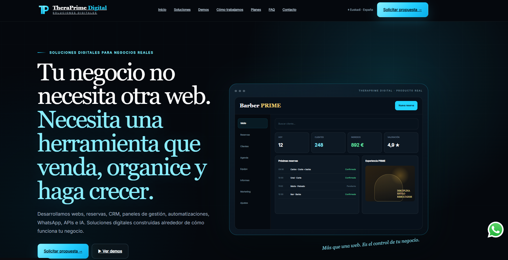
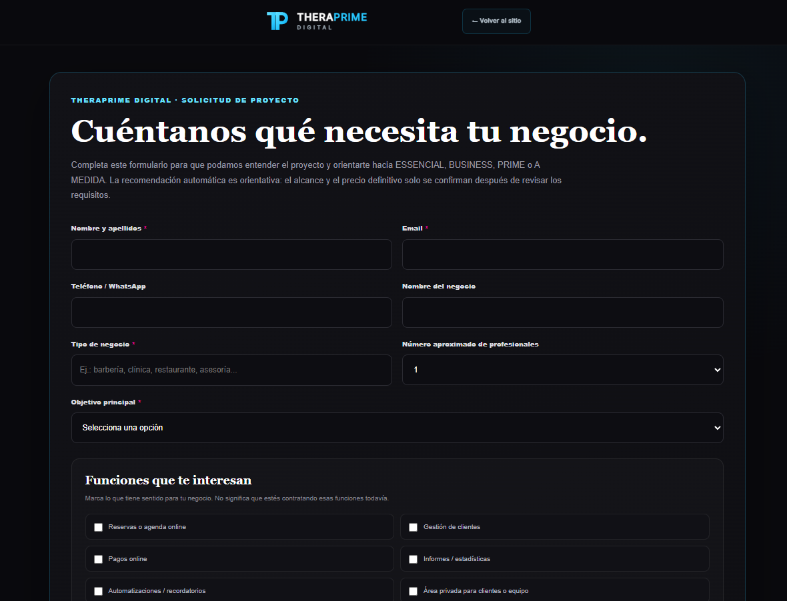
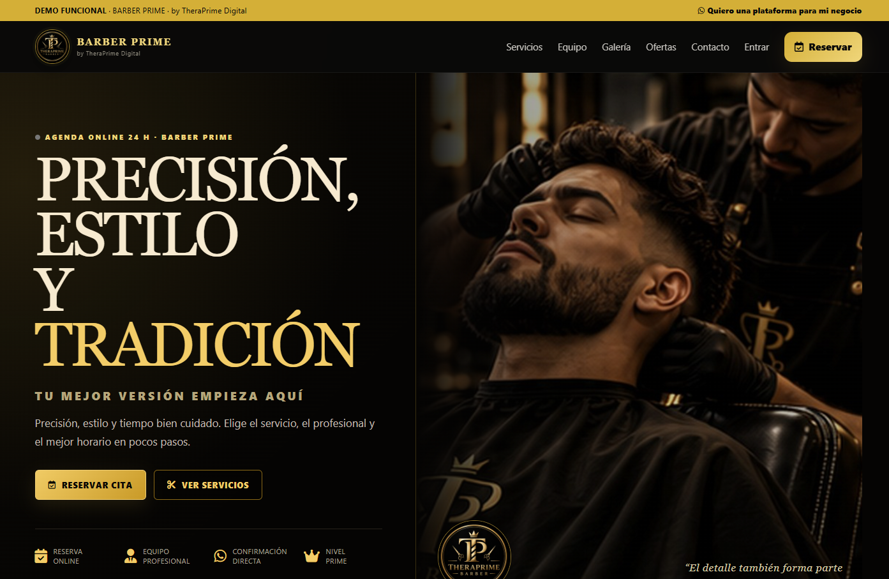
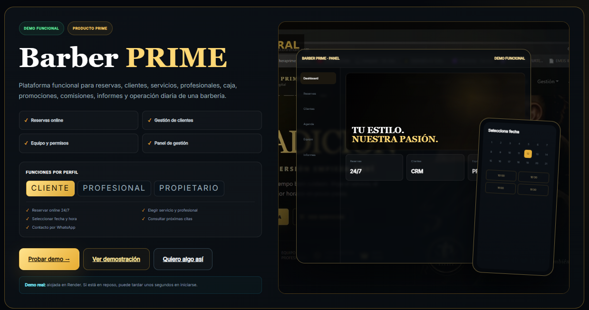

Plataforma principal
Presencia digital, captación, demostraciones y acceso a soluciones creadas para negocios reales.
Web, CRM, reservas, automatización y herramientas de gestión construidas alrededor de cómo funciona un negocio real.
Un ecosistema desarrollado para transformar una presencia digital en una herramienta capaz de captar clientes, organizar procesos y ayudar en la operación diaria de un negocio.

Presencia digital, captación, demostraciones y acceso a soluciones creadas para negocios reales.

El proceso comercial comienza entendiendo el negocio, sus necesidades y las funcionalidades que realmente necesita.

Ejemplo de solución vertical con reservas, profesionales, servicios y experiencia de cliente.

Reservas, CRM, clientes y gestión operativa integrados en una misma solución.
Diferentes tecnologías utilizadas según las necesidades de cada módulo del ecosistema.
Creamos soluciones digitales adaptadas a la operación real de cada negocio.
Solicitar una demo